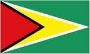
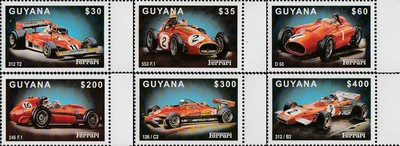
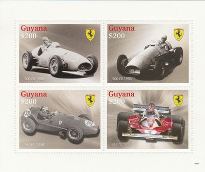
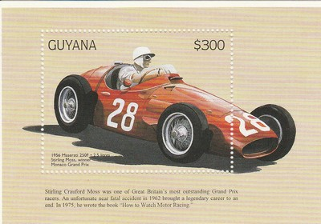
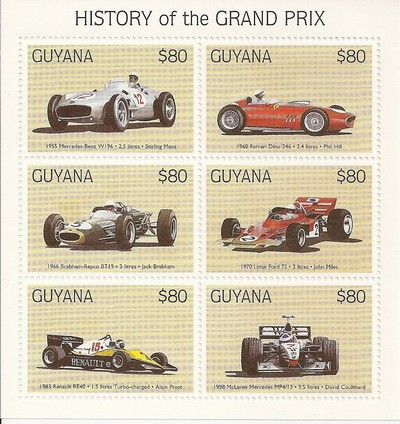

Depicted on Postage Stamps
|  |
 Issue date: 1999 A set of 6 values showing the following Ferrari F1 cars: 1976 312 T2 - this car helped Ferrari win its second consecutive constructor's title, Niki Lauda conceded the driver's title to James Hunt as it was in this car that he suffered a massive accident and was nearly burnt to death, but was back racing just six weeks later. 1954 553 F1 1954 D50 - the Lancia D50 made its debut toward the end of the 1954 season, in the hands of Alberto Ascari, but following his death, the Lancia family sold their controllong share of the company to Ferrari, who continued to develop the car - Juan Manuel Fangio won the championship in the Ferrari D50. 1958 246 F1 - the 246 used a 2417 cc Dino V6 engine, this was the first use of a V6 engine in an F1 car, this car was also the last front engined car to win a Grand Prix (1960 Monza). 1982 126 C2 - the 126 C2 featured Ferrari's first genuine full monocoque chassis and provided Ferrari with the constructor's title. 1972 312 B2  Issue date: 2009 A mini sheet of four values showing various Ferrari F1 cars. 1952 500 F2 - an F2 specification car powered by an in line four cylinder engine which was mounted behind the front axle, improving weight distribution. Alberto Ascari won 9 straight races in the 500, a world championship record which still stands today. The 500 won all but one race it was entered in, making it the second most statistically successful car in the history of the FIA world championship, after McLaren MP4/4 which failed to win only one of its 16 races. 1953 500 F2 1958 246 F1 - the 246 used a 2417cc Dino V6 engine with a 65degree angle between the cylinder banks. This was the first use of a V6 engine in an F1 car, but otherwise the 246 was a conventional front engine design. The Ferrari 246 was good enough to win a World Championship for Mike Hawthorn and a second place in the Constructors Championship for Ferrari. 1976 312 T2  Issue date: 1998 A mini sheet of one stamp showing Stirling Moss and the Maserati 250F - Moss drove the Maserati 250F in 1954, 1956 and 1957 (winning the Monaco and Italian Grand Prix in 1956). In total, the 250F competed in 46 F1 championship races with 277 entries, leading to eight wins. Success was not limited to World Championship events with 250F drivers winning many non-championship races around the world.  Issue date: 1998 A mini sheet of six values , featuring: - Stirling Moss in the Mercedes-Benz W196 - Phil Hill in the Ferrari 246 F1 - Jack Brabham in the Brabham BT19 - John Miles in the Lotus 72 - Alain Prost in the Renault RE40 - David Coulthard in the McLaren MP4/13 |